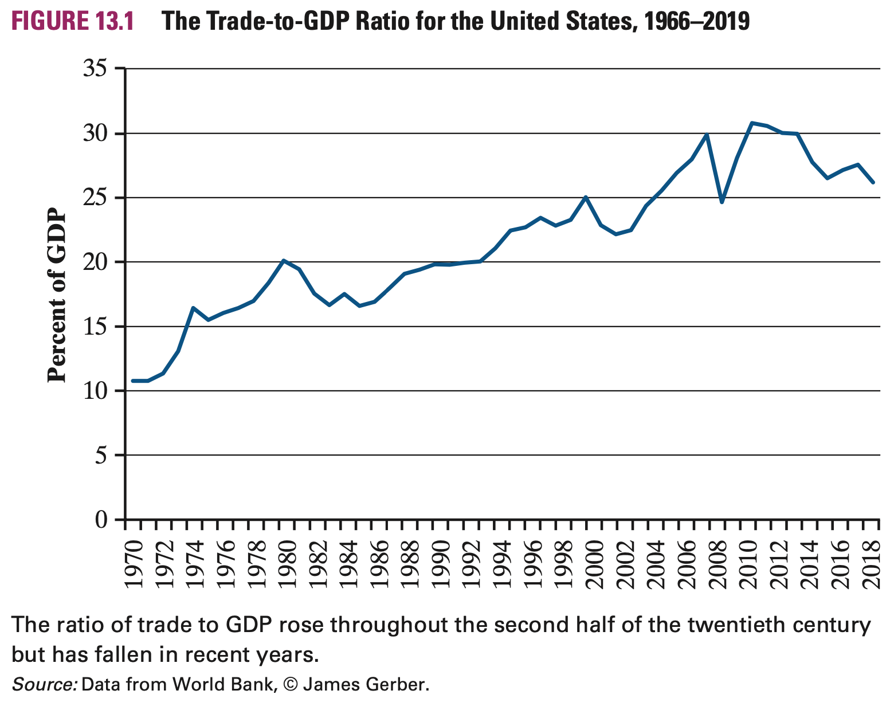
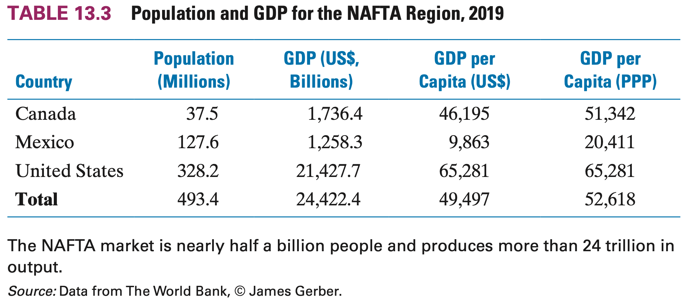
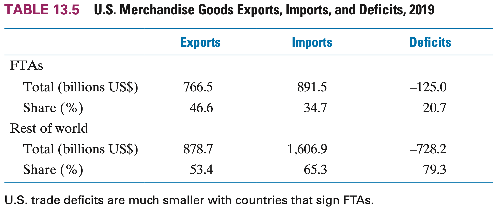

Regional Topics | USA & LATAM
EC 380 - International Economic Issues
2025
The United States of America üá∫üá∏ ü¶Ö
Background: The US is Huge

Background
Post-World War II
- The US has used its size, wealth and military power to create their international economic relations which promote international trade, finance, and support for low- and middle-income countries
- Over time, many emerging markets succeeded and the world economy rebalanced
- The US desire of an open, multilateral world order has decreased
- Support for unilateralism and nationalism has gone up
- Support for international institutions which were set up to support the world economic order has also fallen
US and Trade
Although trade represents a small share of GDP, there has been an upward trend in this ratio
The US Trading Partners

US & MEX
- US \(\Rightarrow\) MEX: $243 BN
- MEX \(\Rightarrow\) US: $456 BN
US & CAN
- US \(\Rightarrow\) CAN: $269 BN
- CAN \(\Rightarrow\) US: $410 BN
CAN & MEX
- MEX \(\Rightarrow\) CAN: $33 BN
- CAN \(\Rightarrow\) MEX: $8.76 BN
Trade Relations
US trading partners have remained pretty consistent (and the Gravity Model can explain it well)

The biggest surprise is China’s surge as a trade partner
Shift in Trade Strategy
Over the last two decades, the US has shifted their trade strategy away from multilateral negotiations and began to favor bilateral/plurilateral negotiations
Multilateral Negotiations
- Involve many countries, usually on a global scale
- Conducted under international organization framework like the WTO
- Aims to create broad and stardardized trade rules that apply to all members
Bilateral/Plurilateral Negotiations
- Involve two (bi) or more (pluri) but fewer than all WTO members
- Can be regional (NAFTA; CAFTA-DR)
- Focus on reducing tariffs, increasing market access, and other specific trade issues
Shift in Trade Strategy
There are several factors that help explain this shift in strategy:
- Multilateral negotations became more complex as more nations became members
- The focus of negotiations has shifted toward much more difficult issues (intellectual property, trade of services, emerging market assistance, etc.)
- The end of the Cold War meant that the US no longer has a need to compromise or offer asymmetric access to the US market
- Rise of nations that were previously relatively unimportant in world markets (China, South Korea, Taiwan, Brazil, India, etc.)
Bilateral/Plurilateral Agreements
NAFTA was the first earnest attempt to move toward bilateral trade solutions
It was signed in 1993 and went into effect in 1994
First to include labor and environmental standards
- Importantly, it gave the US additional leverage in multilateral negotiations as it helped signal that there are other negotiation options beyond the GATT/WTO setting
US Free Trade Agreements
The US currently has Free Trade Agreements (FTA) with twenty countries grouped into three strategic geographical regions
- Middle East & North Africa | Pacific Basin | The Americas

The US, Mexico & Canada
Trade between the US, Mexico, and Canada is very large and significant to the world economy
- 493.4 M people combined
- Over $24 Trillion in combined GDP

The North American Free Trade Agreement
Ratified in 1993, implemented in 1994
A modification called the United States-Mexico-Canada Agreement (USMCA) was negotiated in 2018, ratified and implemented in 2020
The US and Canada already had relatively open economies with few trade barriers through the Auto Pact (1965) and CUSTA (1989)
This wasn’t without its opponents which primarily argued that:
- Issues of Canadian firms competitiveness against US firms
- Concern about erosion of Canadian social programs
- The possibility of US cultural domination
All of this together meant that most of the changes came from the Mexican side of things
Important Features of NAFTA
- Trade Barriers Were Reduced
- Specified Content Requirements for Goods
- Dispute Resolution Mechanisms
- Not featured: Issue of Migration
Important Features of NAFTA - Trade Barriers
Tariff reductions were a key point to increase trade amongst the members
The US already had relatively low tariffs on Mexico:
- Between 1993 and 1996, the average US tariff on Mexican goods fell from 2.07 to 0.65 percent
Mexican tariffs on US goods fell from 10 to 2.9 percent
Tariffs were phases out in variable periods with the intent to give domestic industries sufficient time to adjust to new circumstances
These reductions were a continuation of efforts since the mid-1980s
By 1994, Mexico was substantially open to the world
Important Features of NAFTA - Content Reqs
A specified percentage of the value of the good must be made in North America
- One of the updates made by USMCA increased the content requirements
- The purpose is to prevent nonmembers from using the lower tariffs in one country to gain access to all three markets
- Economists dislike this because it incresaes the possibility of trade diversion (inefficient allocation of resources)
Important Features of NAFTA - Dispute Resolution
Set up dispute resolution depending on the source of the disagreement
- Dumping and anti-dumping duties
- Treatment of foreign investors by national policies (investor-state disputes)
- General disputes
- Labor and Environmental standards
The investor-state dispute article was one of the most controversial parts of the entire agreement.
- Critics see it as an unreasonable empowerment of private firms and a weakening of governments
Important Features of NAFTA - Migration
Because NAFTA is a free trade area and not a common market, there is no provision for the movement of labor
This is usually the norm in FTAs but the US-MEX context makes it an important issue to consider
- Mexican migrants to the US totaled more than 11.1 million in 2018 and were 25% of all immigrants
- There’s an estimate that over one-half of this population is undocumented
- There has been a decline in the rate of migrants from Mexico since the early 2000s
- Even so, the vast number of migrants remains significant and makes it an important issue between both countries
FTA Trade Balance
The US has much less unbalanced trade with the countries that have signed FTAs
When countries enter an FTA, the elimination of trade barriers will usually be greater outside of the US
As foreign barriers decline, US exports grow

Latin America üá≤üáΩüá®üá∫üá©üá¥üá≠üá≥üá¨üáπüáßüáøüá∏üáªüá≥üáÆüá®üá∑üá®üá¥üáªüá™üáµüá¶üáµüá™üáßüá∑üáßüá¥üáµüáæüá∫üáæüá®üá±üá¶üá∑üá∏üá∑üá¨üáæüá¨üá´üá≠üáπ
Context
The region is extraordinarily diverse and shouldn’t be thought of as a “one size fits all”
But there are common themes shared by nearly all nations:
- Common history:
- Spanish/Portuguese colonization and common language
- Gained national independence from Spain and Portugal during the same period
- During the first wave of globalization many countries participated in the world economy as exporters of agricultural and mineral commodities
- After the Great Depression, many nations shifted to interior planning and a targeted industrial strategy
Context
This strategy of state-led industrialization to encourage more domestic manufacturing came to be known as import substitution industrialization
- In the 70s, most nations became borrowers and suffered through a prolonged debt crisis in the 80s
- That triggered plenty of economic policy reforms which mirrored the transformation seen in Europe after the collapse of communism
- At the turn of the century, some nations have become impatient and have turned back toward more state interventionist policies
Context
For the first part of the twentieth century Latin America was one of the fastest-growing regions of the wrold.
The region’s real GDP per capita grew as fast or faster than Euroupe, the US or Asia
After World Ward II, most countries in the region experienced good growth rates, and the two largest countries, Brazil and Mexico, had incredible increases in their per capita income levels
As the 1970s came, the world economic growth slowed and the LATAM experience became more varied.
Some countries grew faster, and some grew slower.
But nearly all relied more heavily on government expenditures to stimulate growth
Context
This period became undone by the Latin American Debt Crisis (1982-1989)
The Debt Crisis turned the 80s into a Lost Decade where sovereign debt issues grew worse by negative growth, banking crises, currency crises, and hyperinflation.
As a response, nations shifted away from state-led economic development toward more market-oriented policies
One of the most important part of this occured in the realm of trade, where countries adopted a strategy known as Import Substitution Industrialization (ISI)
Import Substitution Industrialization
A little more context
For some significant time (half of 19th to middle of 20th century) LATAM relied heavily on exports of agricultural products and minerals to earn foreign revenue
These sectors were either developed or owned by foreign capital or if domestically owned, it usually was concentrated in the power of a few relatively small number of people which added to growing inequality of power and wealth
The loss of markets due to the Great Depression temporarily forced the region away from depending on raw material exports toward domestic industrial development through production of manufactured goods that substitue for imports
Import Substitution Industrialization
Goals of ISI
- Reduce Dependency on Imports
- Promote Industrializtion
- Achieve Economic Self-Sufficiency
- Create Jobs and Economic Growth
Methods of ISI
- Tariffs and Import Restrictions
- Subsisdies and Government Support
- State-Owned Enterprises
- Exchange Rate Controls
- Local Content Requirements
ISI Pros & Cons
In theory
- ISI begins by producing inexpensive and relatively simple consumer goods
- Toys, clothing, food products, etc.
- Gradually, the focus shifts toward more complex consumer goods and intermediate industrial goods
- Generators, appliances, autos, basic metals, etc.
- Eventually, complex industrial goods are produced
- Chemicals, electronics, machine tools, etc.
Pros
- Promotes domestic industrial growth
- Job Creation
- Reduced Foreign Dependence
- Infant industry protection
- Improved Terms of Trade
ISI Pros & Cons
Criticisms
In hindsight, ISI generated a lot of unintended consequences that caused inefficiencies and wasted resources
- Overall, ISI can be interpreted as a set of policies in which government uses its economic and political power to improve the market
- But many economists think that ISI overestimates the technical ability of government officials to identify market failures and their solutions
- It largely ignores problems related to the implementation of economic policies
Cons
- Governments misallocated resources when they became too involved in production decisions
- Exchange rates were often overvalued
- Policy was overly biased in favor of urban areas
- Income inequality worsened
- It fostered widespread rent seeking
EC380, Lecture 11 | Regional Topics